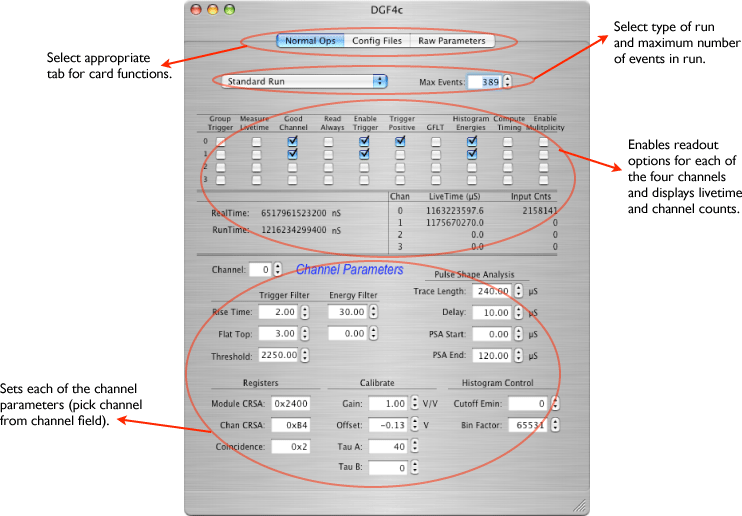
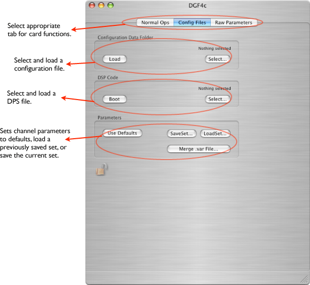
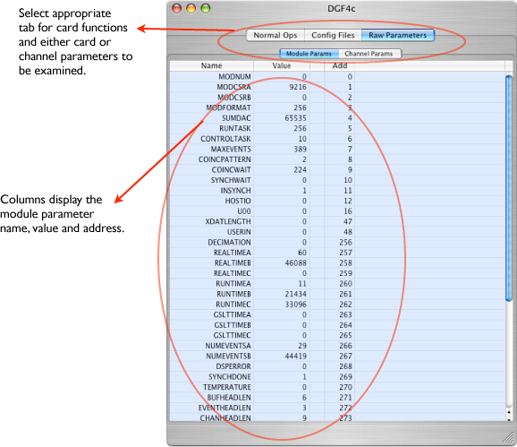

This is a four channel digitizer capable of producing histograms and digitized waveforms from 4 channels. This card is made by XIA. There are many parameters that can be set for each channel. The default parameters can be used or customized by loading parameter files.
Catalog Icon:
This card can exist only in a CAMAC crate. The interface window has several tabs shown below.




Data format to be added when finalized.